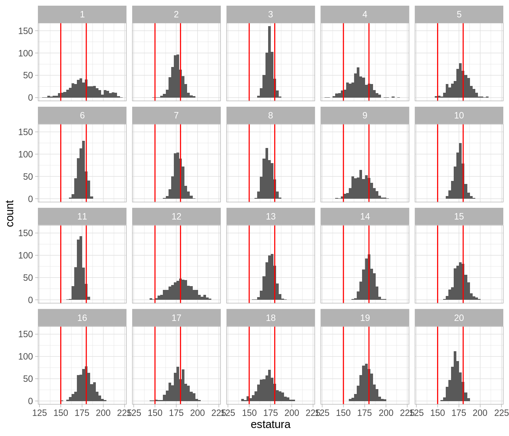
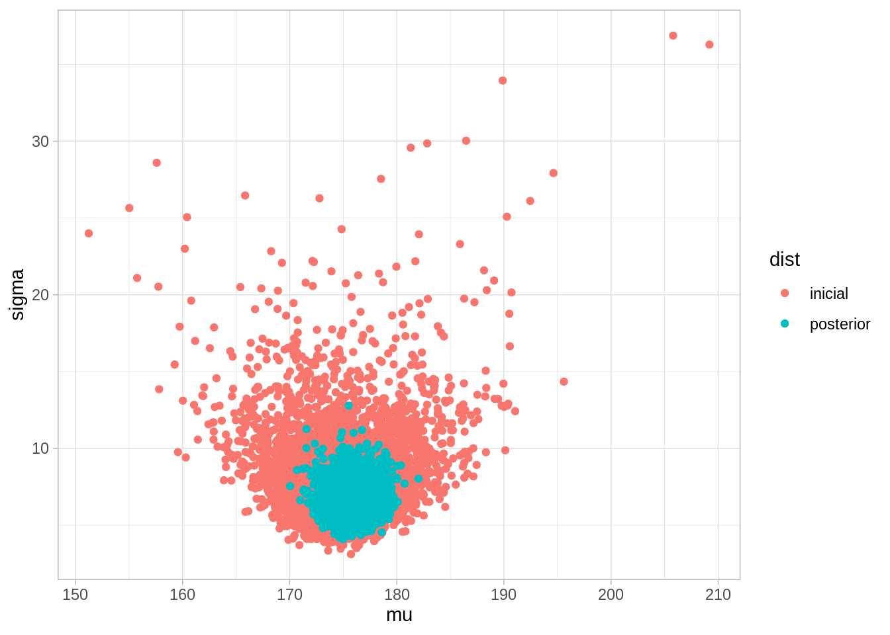

Para esta sección seguiremos principalmente Kruschke (2015). Adicionalmente puedes ver la sección correspondiente de Chihara y Hesterberg (2018).
En las secciones anteriores estudiamos el método de máxima verosimilitud y métodos de remuestreo. Esto lo hemos hecho para estimar parámetros, y cuantificar la incertidumbre qué tenemos acerca de valores poblacionales. La inferencia bayesiana tiene objetivos similares.
Igual que en máxima verosimilitud, la inferencia bayesiana comienza con modelos probabilísticos y observaciones.
En contraste con máxima verosimilitud, la inferencia bayesiana está diseñada para incorporar información previa o de expertos que tengamos acerca de los parámetros de interés.
La inferencia bayesiana cubre como caso particular métodos basados en máxima verosimilitud.
El concepto probabilístico básico que utilizamos para construir estos modelos y la inferencia es el de probabilidad condicional: la probabilidad de que ocurran ciertos eventos dada la información disponible del fenómeno que nos interesa.
Un primer ejemplo completo de inferencia bayesiana
Consideremos el siguiente problema: Nos dan una moneda, y solo sabemos que la moneda puede tener probabilidad \(3/5\) de tirar sol (está cargada a sol) o puede ser una moneda cargada a águila, con probabilidad \(2/5\) de tirar sol.
Vamos a lanzar la moneda dos veces y observamos su resultado (águila o sol). Queremos decir algo acerca de qué tan probable es que hayamos tirado la moneda cargada a sol o la moneda cargada a águila.
En este caso, tenemos dos variables: \(X\), que cuenta el número de soles obtenidos en el experimento aleatorio, y \(\theta\), que da la probabilidad de que un volado resulte en sol (por ejemplo, si la moneda es justa entonces \(\theta = 0.5\)).
¿Qué cantidades podríamos usar para evaluar qué moneda es la que estamos usando? Si hacemos el experimento, y tiramos la moneda 2 veces, podríamos considerar la probabilidad
\[P(\theta = 0.4 | X = x)\]
donde \(x\) es el número de soles que obtuvimos en el experimento. Esta es la probabilidad condicional de que estemos tirando la moneda con probabilidad de sol 2/5 dado que observamos \(x\) soles. Por ejemplo, si tiramos 2 soles, deberíamos calcular
\[P(\theta=0.4|X=2).\]
¿Cómo calculamos esta probabilidad? ¿Qué sentido tiene?
Usando reglas de probabildad (regla de Bayes en particular), podríamos calcular
Nota que en el numerador uno de los factores, \(P(X=2 | \theta = 0.4),\) es la verosimilitud. Así que primero necesitamos la verosimilitud:
\[P(X=2|\theta = 0.4) = (0.4)^2 = 0.16.\]
La novedad es que ahora tenemos que considerar la probabilidad \(P(\theta = 0.4)\). Esta cantidad no la habíamos encontrado antes. Tenemos que pensar entonces que este parámetro es una cantidad aleatoria, y puede tomar dos valores \(\theta=0.4\) ó \(\theta = 0.6\).
Considerar esta cantidad como aleatoria requiere pensar, en este caso, en cómo se escogió la moneda, o qué sabemos acerca de las monedas que se usan para este experimento. Supongamos que en este caso, nos dicen que la moneda se escoge al azar de una bolsa donde hay una proporción similar de los dos tipos de moneda (0.4 ó 0.6). Es decir el espacio parametral es \(\Theta = \{0.4, 0.6\},\) y las probabilidades asociadas a cada posibilidad son las mismas. Es decir, tenemos
\[P(\theta = 0.4) = P(\theta = 0.6) =0.5,\]
que representa la probabilidad de escoger de manera aleatoria la moneda con una carga en particular.
Ahora queremos calcular \(P(X=2)\), pero con el trabajo que hicimos esto es fácil. Pues requiere usar reglas de probabilidad usuales para hacerlo. Podemos utilizar probabilidad total \[\begin{align}
P(X) &= \sum_{\theta \in \Theta} P(X, \theta)\\
&= \sum_{\theta \in \Theta} P(X\, |\, \theta) P(\theta),
\end{align}\] lo cual en nuestro ejemplo se traduce en escribir
Es decir, la probabilidad posterior de que estemos tirando la moneda \(2/5\) baja de 0.5 (nuestra información inicial) a 0.31.
Este es un ejemplo completo, aunque muy simple, de inferencia bayesiana. La estrategia de inferencia bayesiana implica tomar decisiones basadas en las probabilidades posteriores.
Tip
¿Cuál sería la estimación de máxima verosimilitud para este problema? ¿Cómo cuantificaríamos la incertidumbre en la estimación de máxima verosimilitud?
Finalmente, podríamos hacer predicciones usando la posterior predictiva. Si \({X}_{nv}\) es una nueva tirada adicional de la moneda que estamos usando, nos interesaría saber:
\[P({X}_{nv}=\mathsf{sol}\, | \, X=2)\]
Notemos que un volado adicional es un resultado binario. Por lo que podemos calcular observando que \(P({X}_{nv}|X=2, \theta)\) es una variable Bernoulli con probabilidad \(\theta\), que puede valer 0.4 ó 0.6. Como tenemos las probabilidades posteriores \(P(\theta|X=2)\) podemos usar probabilidad total, condicionado en \(X=2\): \[\begin{align*}
P({X}_{nv}=\mathsf{sol}\, | \, X=2) & = \sum_{\theta \in \Theta} P({X}_{nv}=\mathsf{sol}, \theta \, | \, X=2) & \text{(probabilidad total)}\\
&= \sum_{\theta \in \Theta} P({X}_{nv}=\mathsf{sol}\, | \theta , X=2) P(\theta \, | \, X=2) & \text{(probabilidad condicional)}\\
&= \sum_{\theta \in \Theta} P({X}_{nv}=\mathsf{sol}\, | \theta ) P(\theta \, | \, X=2), & \text{(independencia condicional)}
\end{align*}\]
Nótese que en contraste con máxima verosimilitud, en este ejemplo cuantificamos con probabilidad condicional la incertidumbre de los parámetros que no conocemos. En máxima verosimilitud esta probabilidad no tiene mucho sentido, pues nunca consideramos el parámetro desconocido como una cantidad aleatoria.
Observación 1
Nótese el factor \(P(X=2)\) en la probabilidad posterior puede entenderse como un factor de normalización. Notemos que los denominadores en la distribución posterior son
Las probabilidades posteriores son proporcionales a estas dos cantidades, y como deben sumar uno, entonces normalizando estos dos números (dividiendo entre su suma) obtenemos las probabilidades.
Observación 2
La nomenclatura que usamos es la siguiente:
Como \(X\) son los datos observados, llamamos a \(P(X|\theta)\) la verosimilitud, o modelo de los datos.
A \(P(\theta)\) le llamamos la distribución inicial o previa.
La distribución que usamos para hacer inferencia \(P(\theta|X)\) es la distribución final o posterior.
Para utilizar inferencia bayesiana, hay que hacer supuestos para definir las primeras dos partes del modelo. La parte de iniciales o previas está ausente de enfoques como máxima verosimlitud usual.
Observación 3
¿Cómo decidimos las probabilidades iniciales, por ejemplo \(P(\theta=0.4)\) ?
Quizá es un supuesto y no tenemos razón para pensar que se hace de otra manera. O quizá conocemos el mecanismo concreto con el que se selecciona la moneda. Discutiremos esto más adelante.
Observación 4
¿Cómo decidimos el modelo de los datos? Aquí típicamente también tenemos que hacer algunos supuestos, aunque algunos de estos pueden estar basados en el diseño del estudio, por ejemplo. Igual que cuando usamos máxima verosimilitud, es necesario checar que nuestro modelo ajusta razonablemente a los datos.
Ejercicio
Cambia distintos parámetros del número de soles observados, las probabilidades de sol de las monedas, y las probabilidades iniciales de selección de las monedas.
Código
n_volados <-2# posible valores del parámetro desconocidotheta =c(0.4, 0.6)# probabilidades inicialesprobs_inicial <-tibble(moneda =c(1, 2),theta = theta,prob_inicial =c(0.5, 0.5))probs_inicial
¿Qué pasa cuando el número de soles es 0? ¿Cómo cambian las probabilidades posteriores de cada moneda?
Incrementa el número de volados, por ejemplo a 10. ¿Qué pasa si observaste 8 soles, por ejemplo? ¿Y si observaste 0?
¿Qué pasa si cambias las probabilidades iniciales (por ejemplo incrementas la probabilidad inicial de la moneda 1 a 0.9)?
Justifica las siguientes aseveraciones (para este ejemplo):
Tip
Las probabilidades posteriores o finales son una especie de punto intermedio entre verosimilitud y probablidades iniciales.
Si tenemos pocas observaciones, las probabilidades posteriores son similares a las iniciales.
Cuando tenemos muchos datos, las probabilidades posteriores están más concentradas, y no es tan importante la inicial.
Si la inicial está muy concentrada en algún valor, la posterior requiere de muchas observaciones para que se pueda concentrar en otros valores diferentes a los de la inicial.
Ahora resumimos los elementos básicos de la inferencia bayesiana, que son relativamente simples:
Inferencia bayesiana.
Con la notación de arriba:
Como \(X\) son los datos observados, llamamos a \(P(X|\theta)\) la verosimilitud, proceso generador de datos o modelo de los datos.
El factor \(P(\theta)\) le llamamos la distribución inicial o previa.
La distribución que usamos para hacer inferencia \(P(\theta|X)\) es la distribución final o posterior
donde \(\propto\) significa “proporcional a”. No ponemos \(P(X)\) pues como vimos arriba, es una constante de normalización.
En estadística Bayesiana, las probablidades posteriores \(P(\theta|X)\) dan toda la información que necesitamos para hacer inferencia. ¿Cuándo damos probablidad alta a un parámetro particular \(\theta\)? Cuando su verosimilitud es alta y/o cuando su probabilidad inicial es alta. De este modo, la posterior combina la información inicial que tenemos acerca de los parámetros con la información en la muestra acerca de los parámetros (verosimilitud). Podemos ilustrar como sigue:
Ejemplo: estimando una proporción
Regresamos ahora a nuestro problema de estimar una proporción \(\theta\) de una población dada usando una muestra iid \(X_1,X_2,\ldots, X_n\) de variables Bernoulli. Ya sabemos calcular la verosimilitud (el modelo de los datos):
donde \(k = x_1 + x_2 +\cdots + x_k\) es el número de éxitos que observamos.
Ahora necesitamos una distribución inicial o previa \(P(\theta)\). Aunque esta distribución puede tener cualquier forma, supongamos que nuestro conocimiento actual podemos resumirlo con una distribución \(\mathsf{Beta}(3, 3)\):
\[P(\theta) \propto \theta^2(1-\theta)^2.\]
La constante de normalización es 1/30, pero no la requerimos. Podemos simular para examinar su forma:
De modo que nuestra información inicial es que la proporción puede tomar cualquier valor entre 0 y 1, pero es probable que tome un valor no tan lejano de 0.5. Por ejemplo, con probabilidad 0.95 creemos que \(\theta\) está en el intervalo
Es difícil justificar en abstracto por qué escogeriamos una inicial con esta forma. Aunque esto los detallaremos más adelante, puedes pensar, por el momento, que alguien observó algunos casos de esta población, y quizá vio tres éxitos y tres fracasos. Esto sugeriría que es poco probable que la probablidad \(\theta\) sea muy cercana a 0 o muy cercana a 1.
Ahora podemos construir nuestra posterior. Tenemos que
donde la constante de normalización no depende de \(\theta\). Como \(\theta\) es un parámetro continuo, la expresión de la derecha nos debe dar una densidad posterior.
Supongamos entonces que hicimos la prueba con \(n = 30\) (número de prueba) y observamos 19 éxitos. Tendríamos entonces
La cantidad de la derecha, una vez que normalizemos por el número \(P(X=19)\), nos dará una densidad posterior (tal cual, esta expresion no integra a 1). Podemos obtenerla usando cálculo, pero recordamos que una distribución \(\mathsf{\mathsf{Beta}}(a,b)\) tiene como fórmula
\[\frac{1}{B(a,b)} \theta^{a-1}(1-\theta)^{b-1}\]
Concluimos entonces que la posterior tiene una distribución \(\mathsf{Beta}(22, 14)\). Podemos simular de la posterior usando código estándar para ver cómo luce:
La posterior nos dice cuáles son las posibilidades de dónde puede estar el parámetro \(\theta\). Nótese que ahora excluye prácticamente valores más chicos que 0.25 o mayores que 0.9. Esta distribución posterior es el objeto con el que hacemos inferencia: nos dice dónde es creíble que esté el parámetro \(\theta\).
Podemos resumir de varias maneras. Por ejemplo, si queremos un estimador puntual usamos la media posterior:
El segundo renglón nos da un intervalo posterior para \(\theta\) de credibilidad 95%. En inferencia bayesiana esto sustituye a los intervalos de confianza.
El intervalo de la inicial expresa nuestras creencias a priori acerca de \(\theta\). Este intervalo es muy amplio (va de 0.15 a 0.85)
El intervalo de la posterior actualiza nuestras creencias acerca de \(\theta\) una vez que observamos los datos, y es considerablemente más angosto y por lo tanto informativo.
Observaciones:
Nótese que escogimos una forma analítica fácil para la inicial, pues resultó así que la posterior es una distribución beta. No siempre es así, y veremos qué hacer cuando nuestra inicial no es de un tipo “conveniente”.
Como tenemos la forma analítica de la posterior, es posible hacer los cálculos de la media posterior, por ejemplo, integrando la densidad posterior a mano. Esto generalmente no es factible, y en este ejemplo preferimos hacer una aproximación numérica. En este caso particular es posible usando cálculo, y sabemos que la media de una \(\mathsf{\mathsf{Beta}}(a,b)\) es \(a/(a+b)\), de modo que nuestra media posterior es
que podemos interpretar como sigue: para calcular la media posterior, a nuestras \(n\) pruebas iniciales agregamos 4 pruebas adicionales fijas, con 2 éxitos y 2 fracasos, y calculamos la proporción usual de éxitos.
Tip
Repite el análisis considerando en general \(n\) pruebas, con \(k\) éxitos. Utiliza la misma distribución inicial.
Lo mismo aplica para el intervalo de 95% (¿cómo se calcularía integrando?). También puedes usar la aproximación de R, por ejemplo:
Código
qbeta(0.025, shape1 =22, shape2 =14) %>%round(2)
[1] 0.45
Código
qbeta(0.975, shape1 =22, shape2 =14) %>%round(2)
[1] 0.76
Ejemplo: observaciones uniformes
Ahora regresamos al problema de estimación del máximo de una distribución uniforme. En este caso, consideraremos un problema más concreto. Supongamos que hay una lotería (tipo tradicional) en México y no sabemos cuántos números hay. Obtendremos una muestra iid de \(n\) números, ya haremos una aproximación continua, suponiendo que
\[X_i \sim U[0,\theta]\]
La verosimilitud es entonces
\[P(X_1,\ldots, X_n|\theta) = \theta^{-n},\]
cuando \(\theta\) es mayor que todas las \(X_i\), y cero en otro caso. Necesitaremos una inicial \(P(\theta)\).
Por la forma que tiene la verosimilitud, podemos intentar una distribución Pareto, que tiene la forma
con soporte en \([\theta_0,\infty]\). Tenemos que escoger entonces el mínimo \(\theta_0\) y el parámetro \(\alpha\). En primer lugar, como sabemos que es una lotería nacional, creemos que no puede haber menos de unos 300 mil números, así que \(\theta_0 = 300\). La función acumulada de la pareto es \(1- (300/\theta)^\alpha\), así que el cuantil 99% es
Código
alpha <-1.1(300/(0.01)^(1/alpha))
[1] 19738
es decir, alrededor de 20 millones de números. Creemos que es un poco probable que el número de boletos sea mayor a esta cota. Nótese ahora que la posterior cumple (multiplicando verosimilitud por inicial):
para \(\theta\) mayor que el máximo de las \(X_n\)’s y 300, y cero en otro caso. Esta distribución es pareto con \(\theta_0' = \max\{300, X_1,\ldots, X_n\}\) y \(\alpha = n + 1.1\)
Una vez planteado nuestro modelo, veamos los datos. Obtuvimos la siguiente muestra de números:
Rows: 99 Columns: 2
── Column specification ────────────────────────────────────────────────────────
Delimiter: ","
chr (1): numero
dbl (1): id
ℹ Use `spec()` to retrieve the full column specification for this data.
ℹ Specify the column types or set `show_col_types = FALSE` to quiet this message.
Código
set.seed(334)muestra_loteria <-sample_n(loteria_tbl, 25) %>%mutate(numero = numero/1000)muestra_loteria %>% as.data.frame %>% head
id numero
1 87 348.341
2 5 5851.982
3 40 1891.786
4 51 1815.455
5 14 5732.907
6 48 3158.414
Podemos simular de una Pareto como sigue:
Código
rpareto <-function(n, theta_0, alpha){# usar el método de inverso de distribución acumulada u <-runif(n, 0, 1) theta_0 / (1- u)^(1/alpha)}
Nótese que cortamos algunos valores de la inicial en la cola derecha: un defecto de esta distribución inicial, con una cola tan larga a la derecha, es que pone cierto peso en valores que son poco creíbles y la vuelve poco apropiada para este problema. Regresamos más adelante a este problema.
Si obtenemos percentiles, obtenemos el intervalo
Código
f <-c(0.025, 0.5, 0.975)sims_theta %>%group_by(dist) %>%summarise(cuantiles =quantile(theta, f) %>%round(2), f = f) %>%pivot_wider(names_from = f, values_from = cuantiles)
`summarise()` has grouped output by 'dist'. You can override using the
`.groups` argument.
Estimamos entre 5.8 millones y 6.7 millones de boletos. El máximo en la muestra es de
Código
max(muestra_loteria$numero)
[1] 5851.982
Escoger la distribución pareto como inicial es conveniente y nos permitió resolver el problema sin dificultad, pero por su forma vemos que no necesariamente es apropiada para el problema por lo que señalamos arriba. Nos gustaría, por ejemplo, poner una inicial como la siguiente
Sin embargo, los cálculos no son tan simples en este caso, pues la posterior no tiene un forma reconocible. Tendremos que usar otras estrategias de simulación para ejemplos como este (Monte Carlo por medio de Cadenas de Markov, que veremos más adelante).
Probabilidad a priori
La inferencia bayesiana es conceptualmente simple: siempre hay que calcular la posterior a partir de verosimilitud (modelo de datos) y distribución inicial o a priori. Sin embargo, una crítica usual que se hace de la inferencia bayesiana es precisamente que hay que tener esa información inicial, y que distintos analistas llegan a distintos resultados si tienen información inicial distinta.
Eso realmente no es un defecto, es una ventaja de la inferencia bayesiana. Los datos y los problemas que queremos resolver no viven en un vacío donde podemos creer que la estatura de las personas, por ejemplo, puede variar de 0 a mil kilómetros, el número de boletos de una lotería puede ir de 2 o 3 boletos o también quizá 500 millones de boletos, o la proporción de personas infectadas de una enfermedad puede ser de unos cuantos hasta miles de millones.
En todos estos casos tenemos cierta información inicial que podemos usar para informar nuestras estimaciones. Esta información debe usarse.
Antes de tener datos, las probabilidades iniciales deben ser examinadas en términos del conocimiento de expertos.
Las probabilidades iniciales son supuestos que hacemos acerca del problema de interés, y también están sujetas a críticas y confrontación con datos.
Análisis conjugado
Los dos ejemplos que hemos visto arriba son ejemplos de análisis conjugado:
(Beta-bernoulli) Si las observaciones \(X_i\) son \(\mathsf{Bernoulli}(p)\) (\(n\) fija) queremos estimar \(p\), y tomamos como distribución inicial para \(p\) una \(\mathsf{Beta}(a,b)\), entonces la posterior para \(p\) cuando \(S_n=k\) es \(\mathsf{Beta}(k + a, n - k + b)\), donde \(S_n = X_1 + X_2 +\cdots +X_n\).
Y más en general:
(Beta-binomial) Si las observaciones \(X_i, i=1,2,\ldots, m\) son \(\mathsf{Binomial}(n_i, p)\) (\(n_i\)’s fijas) independientes, queremos estimar \(p\), y tomamos como distribución inicial para \(p\) una \(\mathsf{Beta}(a,b)\), entonces la posterior para \(p\) cuando \(S_m=k\) es \(\mathsf{Beta}(k + a, n - k + b)\), donde \(S_m = X_1 + X_2 +\cdots +X_m\) y \(n= n_1+n_2+\cdots+n_m\)
También aplicamos:
(Uniforme-Pareto) Si el modelo de datos \(X_i\) es uniforme \(\mathsf{U}[0,\theta]\) (\(n\) fija), queremos estimar \(\theta\), y tomamos como distribución inicial para \(\theta\) una Pareto \((\theta_0, \alpha)\), entonces la posterior para \(p\) si el máximo de las \(X_i\)’s es igual a \(M\) es Pareto con parámetros \((\max\{\theta_0, M\}, \alpha + n)\).
Nótese que en estos casos, dada una forma de la verosimilitud, tenemos una familia conocida de iniciales tales que las posteriores están en la misma familia. Estos modelos son convenientes porque podemos hacer simulaciones de la posterior de manera fácil, o usar sus propiedades teóricas.
Otro ejemplo típico es el modelo normal-normal:
(Normal-normal) Si \(X_i\sim \mathsf{N}(\mu,\sigma)\), con \(\sigma\) conocida, y tomamos como distribución inicial para \(\mu \sim \mathsf{N}(\mu_0,\sigma_0)\), y definimos la precisión\(\tau\) como el inverso de la varianza \(\sigma^2\), entonces la posterior de \(\mu\) es Normal con media \((1-\lambda) \mu_0 + \lambda\overline{x}\), y precisión \(\tau_0 + n\tau\), donde \(\lambda = \frac{n\tau}{\tau_0 + n\tau}\)
Más útil es el siguiente modelo:
(Normal-Gamma inverso) Sean \(X_i\sim \mathsf{N}(\mu, \sigma)\). Queremos estimar \(\mu\) y \(\sigma\). Tomamos como distribuciones iniciales (dadas por 4 parámetros: \(\mu_0, n_0, \alpha,\beta\)):
\(\mu|\sigma\) es normal con media \(\mu_0\) y varianza \(\sigma^2 / {n_0}\) , y
\(p(\mu, \sigma) = p(\mu|\sigma)p(\sigma)\)
Entonces la posterior es:
\(\tau|x\) es \(\mathsf{Gamma}(\alpha', \beta')\), con \(\alpha' = \alpha + n/2\), \(\beta' = \beta + \frac{1}{2}\sum_{i=1}^{n}(x_{i} - \bar{x})^2 + \frac{nn_0}{n+n_0}\frac{({\bar{x}}-\mu_{0})^2}{2}\)
\(\mu|\sigma,x\) es normal con media \(\mu' = \frac{n_0\mu_{0}+n{\bar{x}}}{n_0 +n}\) y varianza $ ^2/({n_0 +n})$.
\(p(\mu,\sigma|x) = p(\mu|x,\sigma)p(\sigma|x)\)
Observaciones
Nótese que este último ejemplo tienen más de un parámetro. En estos casos, el objeto de interés es la posterior conjunta de los parámetros \(p(\theta_1,\theta_2,\cdots, \theta_p|x)\). Este último ejemplo es relativamente simple pues por la selección de iniciales, para simular de la conjunta de \(\mu\) y \(\tau\) podemos simular primero \(\tau\) (o \(\sigma\)), y después usar este valor para simular de \(\mu\): el par de valores resultantes son una simulación de la conjunta.
Los parámetros \(a,b\) para la inicial de \(\tau\) pueden interpretarse como sigue: \(\sqrt{b/a}\) es un valor “típico” a priori para la varianza poblacional, y \(a\) indica qué tan seguros estamos de este valor típico.
Nótese que para que funcionen las fórmulas de la manera más simple, escogimos una dependencia a priori entre la media y la precisión: \(\tau = \sigma^{-2}\) indica la escala de variabilidad que hay en la población, la incial de la media tiene varianza \(\sigma^2/n_0\). Si la escala de variabilidad de la población es más grande, tenemos más incertidumbre acerca de la localización de la media.
Aunque esto tiene sentido en algunas aplicaciones, y por convenviencia usamos esta familia conjugada, muchas veces es preferible otro tipo de especificaciones para las iniciales: por ejemplo, la media normal y la desviación estándar uniforme, o media normal, con iniciales independientes. Sin embargo, estos casos no son tratables con análisis conjugado (veremos más adelante cómo tratarlos con MCMC).
Ejemplo
Supongamos que queremos estimar la estatura de los cantantes de tesitura tenor con una muestra iid de tenores de Estados Unidos. Usaremos el modelo normal de forma que \(X_i\sim \mathsf{N}(\mu, \sigma^2)\).
Una vez decidido el modelo, tenemos que poner distribución inicial para los parámetros \((\mu, \sigma^2)\).
Comenzamos con \(\sigma^2\). Como está el modelo, esta inicial debe estar dada para la precisión \(\tau\), pero podemos simular para ver cómo se ve nuestra inicial para la desviación estándar. En la población general la desviación estándar es alrededor de 7 centímetros
Código
# Comenzamos seleccionando un valor que creemos típico para la desviación estándarsigma_0 <-7# seleccionamos un valor para a, por ejemplo: si es más chico sigma tendrá más# disperisóna <-3# ponemos 8 = sqrt(b/a) -> b = a * 64b <- a * sigma_0^2c(a = a, b = b)
a b
3 147
Ahora simulamos para calcular cuantiles
Código
tau <-rgamma(1000, a, b)quantile(tau, c(0.05, 0.95))
5% 95%
0.005781607 0.042170161
Código
sigma <-1/sqrt(tau)mean(sigma)
[1] 8.002706
Código
quantile(sigma, c(0.05, 0.95))
5% 95%
4.869653 13.151520
Que es dispersión considerable: con poca probabilidad la desviación estándar es menor a 4 centímetros, y también creemos que es poco creíble la desviación estándar sea de más de 13 centímetros.
Comenzamos con \(\mu\). Sabemos, por ejemplo, que con alta probabilidad la media debe ser algún número entre 1.60 y 1.80. Podemos investigar: la media nacional en estados unidos está alrededor de 1.75, y el percentil 90% es 1.82. Esto es variabilidad en la población: debe ser muy poco probable, por ejemplo, que la media de tenores sea 1.82 Quizá los cantantes tienden a ser un poco más altos o bajos que la población general, así que podríamos agregar algo de dispersión.
Podemos establecer parámetros y simular de la marginal a partir de las fórmulas de arriba para entender cómo se ve la inicial de \(\mu\):
Código
mu_0 <-175# valor medio de inicialn_0 <-5# cuánta concentración en la inicialtau <-rgamma(1000, a,b)sigma <-1/sqrt(tau)mu <-map_dbl(sigma, ~rnorm(1, mu_0, .x /sqrt(n_0)))quantile(mu, c(0.05, 0.5, 0.95))
5% 50% 95%
168.7275 174.8412 180.7905
Que consideramos un rango en el que con alta probabilidad debe estar la media poblacional de los cantantes.
simular_normal_invgamma <-function(n, pars){ mu_0 <- pars[1] n_0 <- pars[2] a <- pars[3] b <- pars[4]# simular media tau <-rgamma(1, a, b) sigma <-1/sqrt(tau) mu <-rnorm(1, mu_0, sigma/sqrt(n_0))# simular sigmarnorm(n, mu, sigma)}set.seed(3461)sims_tbl <-tibble(rep =1:20) %>%mutate(estatura =map(rep, ~simular_normal_invgamma(500, c(mu_0, n_0, a, b)))) %>%unnest(cols =c(estatura))ggplot(sims_tbl, aes(x = estatura)) +geom_histogram() +facet_wrap(~ rep) +geom_vline(xintercept =c(150, 180), colour ="red")
`stat_bin()` using `bins = 30`. Pick better value with `binwidth`.

Pusimos líneas de referencia en 150 y 180. Vemos que nuestras iniciales no producen simulaciones totalmente fuera del contexto, y parecen cubrir apropiadamente el espacio de posiblidades para estaturas de los tenores. Quizá hay algunas realizaciones poco creíbles, pero no extremadamente. En este punto, podemos regresar y ajustar la inicial para \(\sigma\), que parece tomar valores demasiado grandes (produciendo por ejemplo una simulación con estatura de 220 y 140, que deberían ser menos probables).
Ahora podemos usar los datos para calcular nuestras posteriores.
Los cálculos son un poco tediosos, pero podemos construir una función apropiada:
Código
calcular_pars_posterior <-function(x, pars_inicial){# iniciales mu_0 <- pars_inicial[1] n_0 <- pars_inicial[2] a_0 <- pars_inicial[3] b_0 <- pars_inicial[4]# muestra n <-length(x) media <-mean(x) S2 <-sum((x - media)^2)# sigma post a_1 <- a_0 +0.5* n b_1 <- b_0 +0.5* S2 +0.5* (n * n_0) / (n + n_0) * (media - mu_0)^2# posterior mu mu_1 <- (n_0 * mu_0 + n * media) / (n + n_0) n_1 <- n + n_0c(mu_1, n_1, a_1, b_1)}pars_posterior <-calcular_pars_posterior(cantantes$estatura_cm, c(mu_0, n_0, a, b))pars_posterior
[1] 175.8 25.0 13.0 509.0
¿Cómo se ve nuestra posterior comparada con la inicial? Podemos hacer simulaciones:
Código
sim_params <-function(m, pars){ mu_0 <- pars[1] n_0 <- pars[2] a <- pars[3] b <- pars[4]# simular sigmas sims <-tibble(tau =rgamma(m, a, b)) %>%mutate(sigma =1/sqrt(tau))# simular mu sims <- sims %>%mutate(mu =rnorm(m, mu_0, sigma /sqrt(n_0))) sims}sims_inicial <-sim_params(5000, c(mu_0, n_0, a, b)) %>%mutate(dist ="inicial")sims_posterior <-sim_params(5000, pars_posterior) %>%mutate(dist ="posterior")sims <-bind_rows(sims_inicial, sims_posterior)ggplot(sims, aes(x = mu, y = sigma, colour = dist)) +geom_point()

Y vemos que nuestra posterior es consistente con la información inicial que usamos, hemos aprendido considerablemente de la muestra. La posterior se ve como sigue. Hemos marcado también las medias posteriores de cada parámetro: media y desviación estándar.
Ahora solo resta checar que el modelo es razonable. Veremos más adelante cómo hacer esto, usando la distribución predictiva posterior.
Pasos de un análisis de datos bayesiano
Tip
Como vimos en los ejemplos, en general un análisis de datos bayesiano sigue los siguientes pasos:
Identificar los datos releventes a nuestra pregunta de investigación, el tipo de datos que vamos a describir, que variables queremos estimar.
Definir el modelo descriptivo para los datos. La forma matemática y los parámetros deben ser apropiados para los objetivos del análisis.
Especificar la distribución inicial de los parámetros.
Utilizar inferencia bayesiana para reubicar la credibilidad a lo largo de los posibles valores de los parámetros.
Verificar que la distribución posterior replique los datos de manera razonable, de no ser el caso considerar otros modelos descriptivos para los datos.
Elicitando probablidades subjetivas (opcional)
No siempre es fácil elicitar probabilidades subjetivas de manera que capturemos el verdadero conocimiento de dominio que tenemos. Una manera clásica de hacerlo es con apuestas
Considera una pregunta sencilla que puede afectar a un viajero: ¿Qué tanto crees que habrá una tormenta que ocasionará el cierre de la autopista México-Acapulco en el puente del \(20\) de noviembre? Como respuesta debes dar un número entre \(0\) y \(1\) que refleje tus creencias. Una manera de seleccionar dicho número es calibrar las creencias en relación a otros eventos cuyas probabilidades son claras.
Como evento de comparación considera una experimento donde hay canicas en una urna: \(5\) rojas y \(5\) blancas. Seleccionamos una canica al azar. Usaremos esta urna como comparación para considerar la tormenta en la autopista. Ahora, considera el siguiente par de apuestas de las cuales puedes elegir una:
A. Obtienes \(\$1000\) si hay una tormenta que ocasiona el cierre de la autopista el próximo \(20\) de noviembre.
B. Obtienes \(\$1000\) si seleccionas una canica roja de la urna que contiene \(5\) canicas rojas y \(5\) blancas.
Si prefieres la apuesta B, quiere decir que consideras que la probabilidad de tormenta es menor a \(0.5\), por lo que al menos sabes que tu creencia subjetiva de una la probabilidad de tormenta es menor a \(0.5\). Podemos continuar con el proceso para tener una mejor estimación de la creencia subjetiva.
A. Obtienes \(\$1000\) si hay una tormenta que ocasiona el cierre de la autopista el próximo \(20\) de noviembre.
C. Obtienes \(\$1000\) si seleccionas una canica roja de la urna que contiene \(1\) canica roja y \(9\) blancas.
Si ahora seleccionas la apuesta \(A\), esto querría decir que consideras que la probabilidad de que ocurra una tormenta es mayor a \(0.10\). Si consideramos ambas comparaciones tenemos que tu probabilidad subjetiva se ubica entre \(0.1\) y \(0.5\).
Verificación predictiva posterior
Una vez que ajustamos un modelo bayesiano, podemos simular nuevas observaciones a partir del modelo. Esto tiene dos utilidades:
Hacer predicciones acerca de datos no observados.
Confirmar que nuevas producidas simuladas con el modelo son similares a las que de hecho observamos. Esto nos permite confirmar la calidad del ajuste del modelo, y se llama verificación predictiva posterior.
Supongamos que tenemos la posterior \(p(\theta | x)\). Podemos generar una nueva replicación de los datos como sigue:
La distribución predictiva posterior genera nuevas observaciones a partir de la información observada. La denotamos como \(p(\tilde{x}|x)\).
Para simular de ella:
Muestreamos un valor \(\tilde{\theta}\) de la posterior \(p(\theta|x)\).
Simulamos del modelo de las observaciones \(\tilde{x} \sim p(\tilde{x}|\tilde{\theta})\).
Repetimos el proceso hasta obtener una muestra grande.
Usamos este método para producir, por ejemplo, intervalos de predicción para nuevos datos.
Si queremos una replicación de las observaciones de la predictiva posterior,
Muestreamos un valor \(\tilde{\theta}\) de la posterior \(p(\theta|x)\).
Simulamos del modelo de las observaciones \(\tilde{x}_1, \tilde{x}_2,\ldots, \tilde{x}_n \sim p(\tilde{x}|\tilde{\theta})\), done \(n\) es el tamaño de muestra de la muestra original \(x\).
Usamos este método para producir conjuntos de datos simulados que comparamos con los observados para verificar nuestro modelo.
Ejemplo: estaturas de tenores
En este ejemplo, usaremos la posterior predictiva para checar nuestro modelo. Vamos a crear varias muestras, del mismo tamaño que la original, según nuestra predictiva posterior, y compararemos estas muestras con la observada.
Con este tipo de gráficas podemos checar desajustes potenciales de nuestro modelo.
¿Puedes encontrar los datos verdaderos? ¿Cuántos seleccionaron los datos correctos?
Prueba hacer pruebas con una gráfica de cuantiles. ¿Qué problema ves y cómo lo resolverías?
Ejemplo: modelo Poisson
Supongamos que pensamos el modelo para las observaciones es Poisson con parámetro \(\lambda\). Pondremos como inicial para \(\lambda\) una exponencial con media 10.
Y verificamos que en este caso el ajuste del modelo es apropiado.
Predicción
Cuando queremos hacer predicciones particulares acerca de datos que observemos en el futuro, también podemos usar la posterior predictiva. En este caso, tenemos que considerar
La variabilidad que produce la incertidumbre en la estimación de los parámetros
La variabilidad de las observaciones dados los parámetros.
Es decir, tenemos que simular sobre todos las combinaciones factibles de los parámetros.
Ejemplo: cantantes
Si un nuevo tenor llega a un coro, ¿cómo hacemos una predicción de su estatura? Como siempre, quisiéramos obtener un intervalo que exprese nuestra incertidumbre acerca del valor que vamos a observar. Entonces haríamos:
Código
sims_posterior <-sim_params(50000, pars_posterior) %>%mutate(y_pred =rnorm(n(), mu, sigma))sims_posterior %>% head
f <-c(0.025, 0.5, 0.975)sims_posterior %>%summarise(f = f, y_pred =quantile(y_pred, f))
# A tibble: 3 × 2
f y_pred
<dbl> <dbl>
1 0.025 163.
2 0.5 176.
3 0.975 189.
Y con esto obtenemos el intervalo (163, 189), al 95%, para una nueva observación. Nótese que este intervalo no puede construirse con una simulación particular de la posterior de los parámetros, pues sería demasiado corto.
Es posible demostrar que en este caso, la posterior predictiva tiene una forma conocida:
La posterior predictiva para el modelo normal-gamma inverso es una distribución \(t\) con \(2\alpha'\) grados de libertad, centrada en \(\mu'\), y con escala \(s^2 = \frac{\beta'}{\alpha'}\frac{n + n_0 + 1}{n +n_0}\)
La posterior predictiva del modelo Pareto-Uniforme no tiene un nombre estándar, pero podemos aproximarla usando simulación. Usando los mismos datos del ejercicio de la lotería, haríamos:
Código
rpareto <-function(n, theta_0, alpha){# usar el método de inverso de distribución acumulada u <-runif(n, 0, 1) theta_0 / (1- u)^(1/alpha)}# Simulamos de la posterior de los parámetroslim_inf_post <-max(c(300, muestra_loteria$numero))k_posterior <-nrow(muestra_loteria) +1.1sims_pareto_posterior <-tibble(theta =rpareto(100000, lim_inf_post, k_posterior))# Simulamos una observación para cada una de las anteriores:sims_post_pred <- sims_pareto_posterior %>%mutate(x_pred =map_dbl(theta, ~runif(1, 0, .x)))# Graficamosggplot(sims_post_pred, aes(x = x_pred)) +geom_histogram(binwidth =50) +geom_vline(xintercept = lim_inf_post, colour ="red")